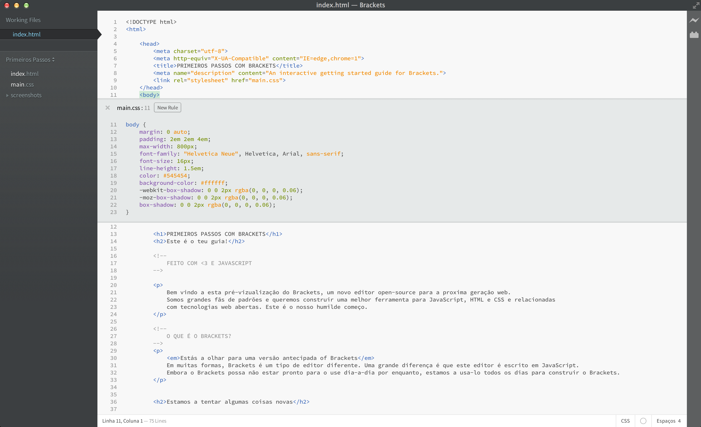

Bem vindo a esta pré-vizualização do Brackets, um novo editor open-source para a proxima geração web. Somos grandes fãs de padrões e queremos construir uma melhor ferramenta para JavaScript, HTML e CSS e relacionadas com tecnologias web abertas. Este é o nosso humilde começo.
Estás a olhar para uma versão antecipada of Brackets Em muitas formas, Brackets é um tipo de editor diferente. Uma grande diferença é que este editor é escrito em JavaScript. Embora o Brackets possa não estar pronto para o use dia-a-dia por enquanto, estamos a usa-lo todos os dias para construir o Brackets.
Ao editar HTML, use as teclas de atalho Cmd/Ctrl + E para abrir um rapidamente o editor de linha que mostra todo o CSS relacionado. Faça uma pequena alteração no seu CSS, pressione ESC e está de volta a editar HTML. Ou simplesmente deixe as regras de CSS abertas e elas tornam-se parte do seu editor de HTML. Se pressionar a tecla ESC fora do Editor Rápido, todas elas fecham. Sem mais trocas de ficheiros e perdar o fio à meada.
Queres ver isto em acção? Posiciona o teu cursor sobre a tag e pressiona Cmd/Ctrl + E. Deves ver o Editor Rápido de CSS aparecer. Na direita vais ver uma lista de regras CSS relacionadas com essa tag. Simplesmente navegue pela list de regras com Alt + Up/Down para encontrar aquela que queres editar. Sabes que a "dança guardar/recarregar" que fizemos por anos? Aquela que fazes uma mudança no editor, pressionas guardar, mudas para o navegador e precionas recarregar para ver o resultado? Com o Brackets, não precisas de fazer essa dança.
Brackets abre uma live connection para o teu navegador e envia actualizações do CSS assim que escreves! Probavelmente já fazias uma coisa parecida com ferramentas de navegador, mas com o Brackets não é preciso copiar e colar o código CSS final de novo no editor. O teu código corre no navegador, e vive no teu editor!
Se tens o Google Chrome instalado, podes tentar isto por ti próprio. Clica no icone do relampago no canto superior direito ou pressiona Cmd/Ctrl + Alt + P. Quando o Live Preview está ligado a um documento HTML, todo o css ligado a ele pode ser editado em temo real. O icone muda de cinzento para dourado quando o Brackets estabelece a ligação ao navegador. Agora, ponha o seu curso na tag em cima (linha 56) e pressione Cmd/Ctrl + E Para abrir as regras CSS para aquela tag. Tenta mudar o tamanho da borda de 10px par 20px ou muda a cor de fundo de "transparent"(nome da cor) para "hotpink"(nome da cor). Se o Brackets e o teu navegador estão a correr lado-a-lado, vais ver que as mudanças são instantaneas no teu navegador. Altamente, certo?Hoje, o Brackets só suporta Live Preview para CSS. Estamos de momento a trabalhar no Live Preview para HTML e JavaScript. Na versãp actual, não vai ver mudanças no seu ficheiro HTML até guardar o documento. Live previews são só possiveis com Google Chrome. Nós queremos trazer esta funcionalidade para todos os navegadores mais conhecidos, e estamos ansiosos por trabalhar com esses fornecedores.
Brackets é um projeto open-source. Desenvolvedores Web de todo o mundo estão a contribuir para construir um melhor editor de código. Diz-nos o que pensas, partilha as tuas ideias or contribui diretamente para o projeto.